- 綜合測驗第2題：形似字讀音判斷，正答 D「蟄／執」。
- 綜合測驗第5題：語病判斷，正答 C。
- 綜合測驗第7題：成語運用，推定正答 B「相見恨晚」。
- 綜合測驗第11題：詩句與心境對應，正答 D。
- 綜合測驗第14題：人物行為寓意，正答 B「己所不欲，勿施於人」。
- 第17題：新聞內容判讀，正答 C。
- 第18題：科技文意主旨，正答 B。
- 第23題：圖表中心標題，正答 B「自駕車普及後的影響」。
- 第24題：比喻句涵義，正答 D。
- 題組一第1題：左宗棠故事，正答 A「故意落敗」。
- 題組二第3題：消除記憶方式，正答 B「輕微電擊和圖片呈現」。
- 基礎題需複核：字音「蟄、憎」、成語「行屍走肉」、改錯題有扣分痕跡。
錯題一覽
先看這張表，知道要補哪幾個能力。
逐題錯題詳解
點截圖可放大檢視原題與批改痕跡。
形似字不是看長得像，要看讀音是否真的相同
題目問「何組讀音相同」。
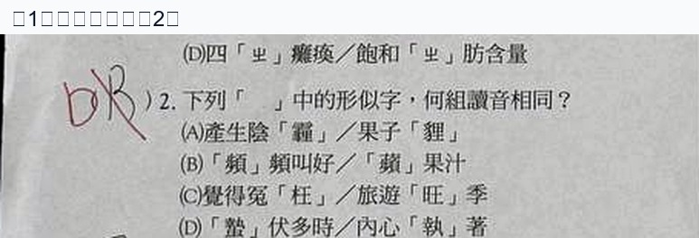
孩子答案疑似 B
正答D「蟄／執」
「蟄伏」的「蟄」讀 ㄓˊ，「執著」的「執」也讀 ㄓˊ，所以兩字讀音相同。這題容易被字形或語感牽走；作答時要逐一唸出注音。
口訣：看到「形似字讀音」題，先遮住字義，只比注音。
再練一次
- 蟄伏：ㄓˊ ㄈㄨˊ。
- 執著：ㄓˊ ㄓㄨㄛˊ。
- 請各造一個短句，確認不是只會背答案。
判斷語病，要看詞語和前後語意是否互相打架
題目問「何者用詞恰當，沒有語病」。
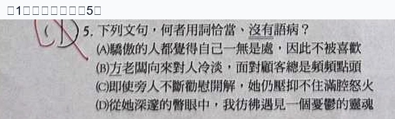
孩子答案疑似 D
正答C
C「即使旁人不斷加以開解，她仍壓抑不住滿腔怒火」前後合理：別人勸解，但她仍然生氣。A「驕傲」卻「覺得自己一無是處」語意矛盾；D「湍急」通常形容水流，不適合形容喉嚨或聲音。
口訣：語病題先問三件事——主詞搭不搭？形容詞用對對象嗎？前後有沒有矛盾？
成語不只要知道意思，還要放回句子看情境
照片顯示紅筆疑似更正為 B。
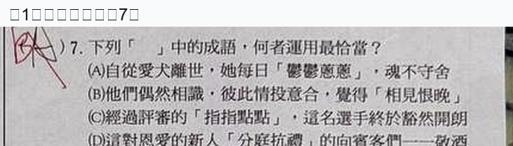
孩子答案不清楚
推定正答B「相見恨晚」
「相見恨晚」是指彼此意氣相投，只恨太晚認識。若句子描述兩人偶然相識、情投意合，就最符合。其他選項可能是成語語意或使用對象不合。
口訣：成語題不要只看熟悉度；把成語白話翻譯後代回句子。
「陰霾消散」對應的是困境後豁然開朗
題幹：「展開難得的微笑，心中長久的陰霾隨之消散」。
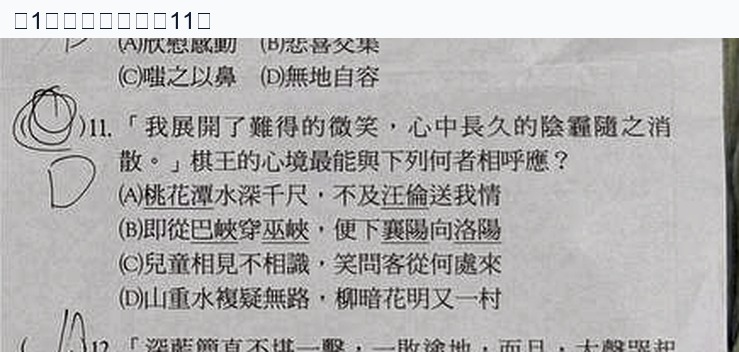
孩子答案疑似 C
正答D
D「山重水複疑無路，柳暗花明又一村」寫的是原本以為走投無路，忽然看到轉機，和「陰霾消散」的心境最接近。這題不是考字面風景，而是考心情轉折。
口訣：詩句題先翻成心情：失望→轉機、悲傷→釋懷、豪情→壯志。
從人物經歷推行為動機：因為自己不願受苦，所以不加諸他人
題目問王朝明的行為可用哪句話說明。
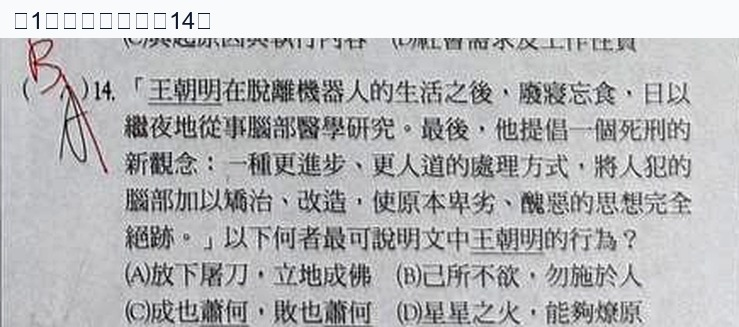
孩子答案疑似 A
正答B「己所不欲，勿施於人」
王朝明經歷機器人生活後，發展較人道的死刑處理方式，重點是「自己不想承受的痛苦，也不要加在別人身上」，所以是 B。
口訣：人物行為題要找「因果」：他經歷了什麼？所以做了什麼？符合哪一句話？
「棋差一著」不是完全慘敗，而是最後差一步沒能逆轉
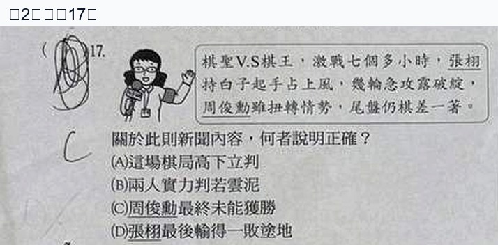
孩子答案不清楚
正答C
新聞說張栩「周俊勳雖率先搶得勝勢，見證仍棋差一著」。意思是周俊勳曾有機會，但最後沒有逆勝，所以 C「周俊勳最終未能逆勝」最合理。
口訣：閱讀題遇到成語，先把成語白話化，再回到句子判斷。
文章主旨是「科技快到超越想像」，不是「科幻帶領科技」
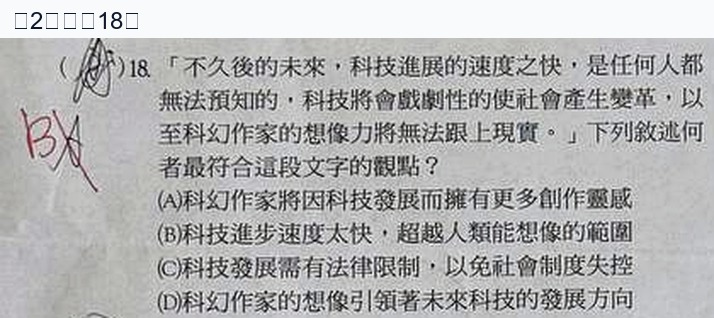
孩子答案疑似 A
正答B
題幹說科技進展快到「科幻作家的想像力將無法跟上現實」。核心不是作家有更多靈感，而是科技進步速度太快，超越人類能想像的範圍。
口訣：主旨題先抓關鍵轉折句；本題關鍵是「無法跟上」。
中心標題要能統整所有箭頭，不是只抓其中一格
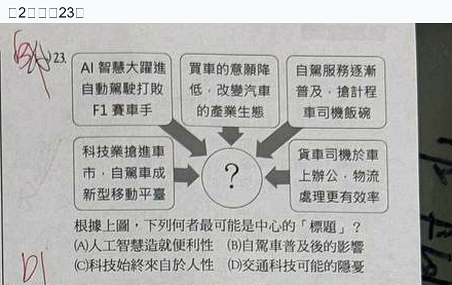
孩子答案不清楚
正答B「自駕車普及後的影響」
圖中每個方框都圍繞自動駕駛／自駕車：AI 車隊、產業生態、司機工作、物流效率、移動平台。因此中心標題要統整成「自駕車普及後的影響」，比「人工智慧造成便利性」或「科技願景」更精準。
口訣：圖表標題＝所有分支的最大共同主題。
為了趕老鼠燒房子：傷到的是自己
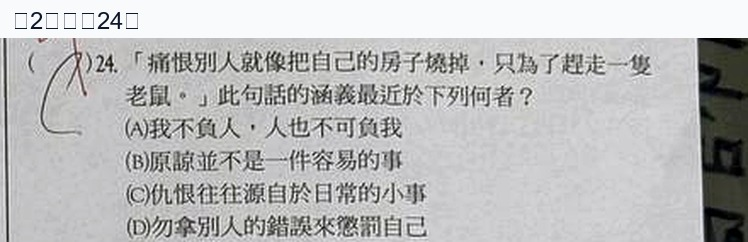
孩子答案疑似 C
正答D
「憎恨別人就像把自己的房子燒掉，只為了趕走一隻老鼠」強調恨別人其實會先傷害自己，所以最接近 D「勿拿別人的錯誤來懲罰自己」。
口訣：比喻題要對應「本體」和「喻體」：老鼠＝別人的錯，燒房子＝傷害自己。
連輸三盤不是棋藝差，是故意保留對方士氣
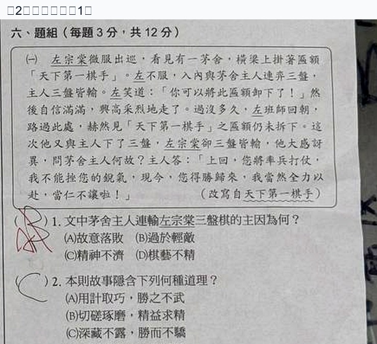
孩子答案疑似 B
正答A「故意落敗」
故事中考舍主人後來說「先前奉承大人只是希望大人有好心情」，因此先前輸棋不是因為輕敵或棋藝不好，而是有意讓左宗棠保有信心。
口訣：題組故事題要抓角色說出的「解釋原因」那一句。
消除記憶的實驗方法：圖片呈現搭配輕微電擊
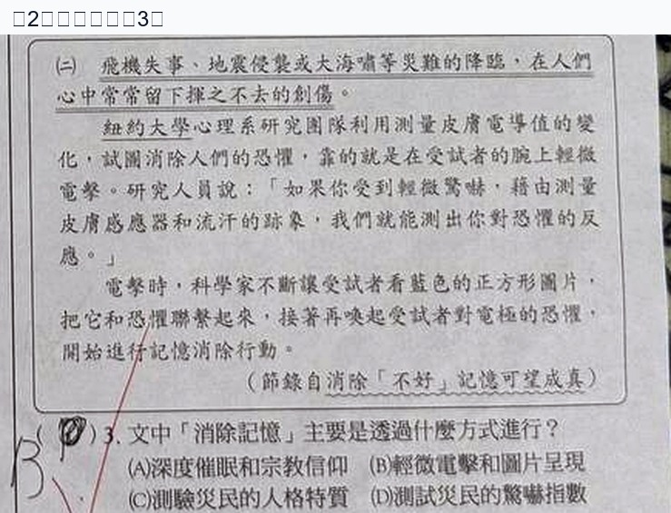
孩子答案疑似 D
正答B
文章提到科學家以「圖片」引發記憶，再搭配「輕微電擊」與反應測量，觀察恐懼記憶是否消除。因此答案不是藥物反應，也不是人格測驗。
口訣：科普細節題先圈實驗步驟：刺激是什麼？測量是什麼？目的又是什麼？
需複核但值得訂正的基礎題
這些題在照片上看得到紅筆扣分或更正，但局部不夠清楚，因此先做「訂正提醒」。
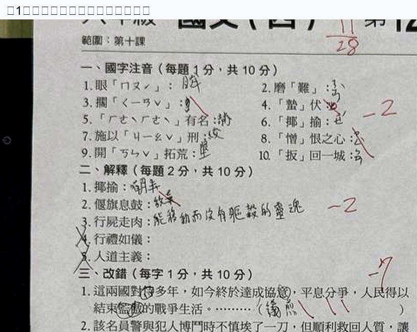
- 字音：「蟄」應讀 ㄓˊ，常誤讀成 ㄓㄜˊ。
- 字音：「憎」應讀 ㄗㄥ，不讀 ㄗㄥˋ。
- 成語：「行屍走肉」不是單指身體或動作，而是「徒具形體、沒有精神思想或生氣的人」。
- 改錯題旁有扣分痕跡，建議拿原答案本逐字核對，尤其是成語與句意搭配。
訂正方法：把每個錯字／錯音寫成「字詞＋正確注音／解釋＋自己造句」三欄，不要只抄答案。
整頁原圖備查
若要回到完整考卷脈絡，可點整頁照片放大。
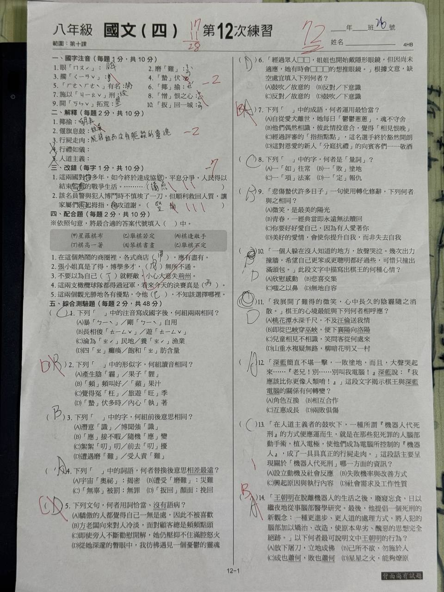
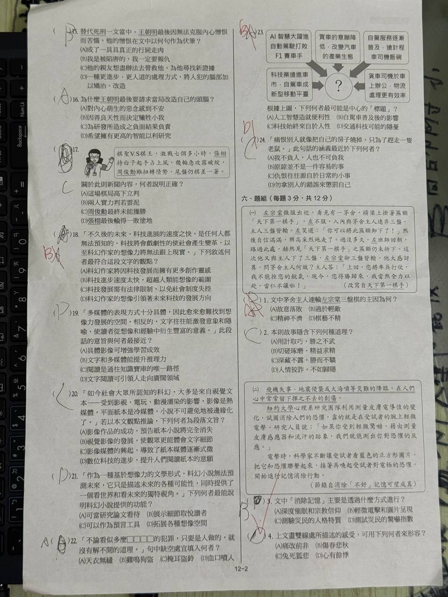
訂正檢核表
可在手機上邊看邊打勾，紀錄會存在這台裝置的瀏覽器。